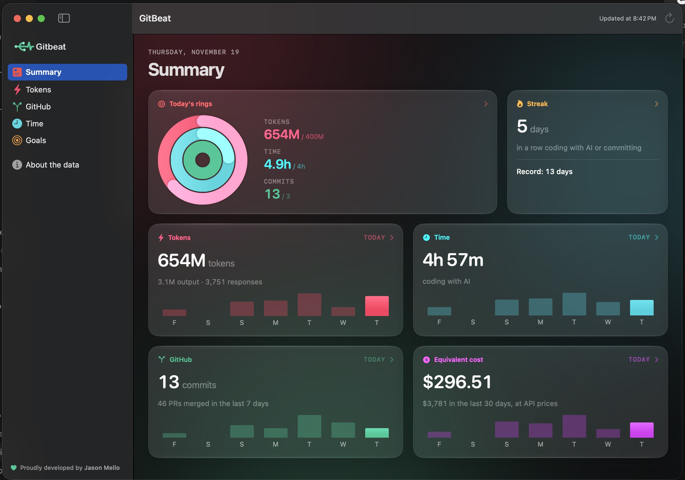
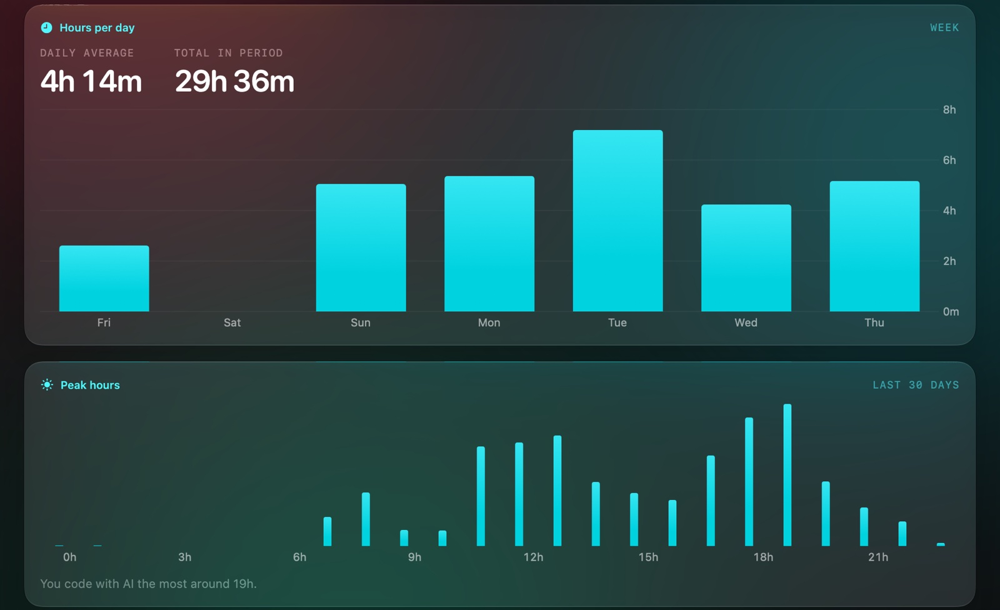
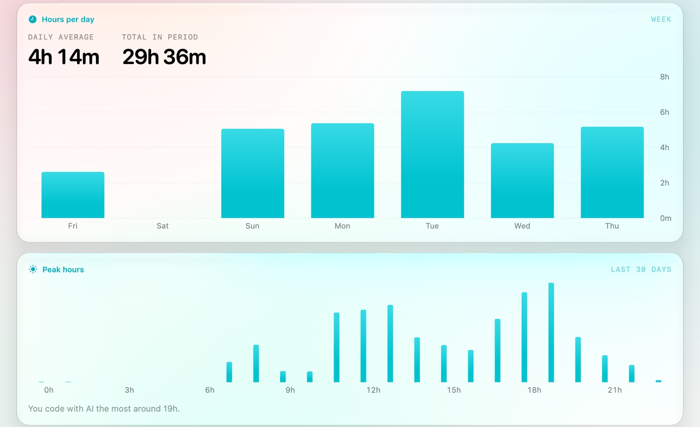
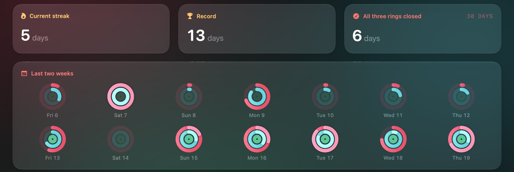
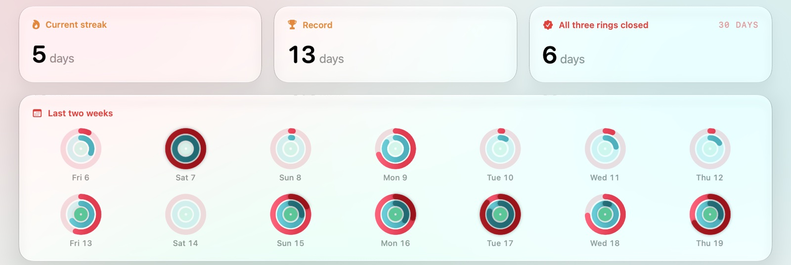

See where every token goes.
Per day, week, month or year — split by tool, project and model, with the equivalent cost at API list prices.
Apple Health, for coding with AI
GitBeat turns your AI coding sessions and GitHub activity into rings, streaks and charts — in a native Mac app that lives in your menu bar.
Claude Code · OpenCode · Codex CLI · Gemini CLI · GitHub

The real app, with Liquid Glass. Your day, at a glance.
A familiar way to see your day
Three rings, like the ones on your wrist. Set a daily goal for tokens, hours and commits, and watch the day fill up.
Tokens from every AI coding tool you use, counted once.
Time actually spent coding with AI — breaks don't count.
Commits that reached your main branches, private repos included.
Works with what you already use
GitBeat reads the session files these tools already keep on your Mac. Nothing to configure, no API keys.
~/.claude/projects~/.codex/sessions~/.local/share/opencode~/.gemini/tmpPlus GitHub, through the GitHub CLI you're already signed in to. Cursor keeps usage only in your online account, so it can't be read locally.
Features
Per day, week, month or year — split by tool, project and model, with the equivalent cost at API list prices.
Most tokens are context the model re-reads on every reply. GitBeat shows the split, so big numbers make sense.
Gaps of up to 15 minutes between replies count as active. Parallel sessions count once. Find your peak hours.


Commits come from each repository's history, so private repos show up even when your profile calendar hides them.
Daily goals for tokens, hours and commits, your current streak and your record — and the last two weeks at a glance.


Today's tokens sit in your menu bar. When your streak is about to end, the icon turns into a flame. Opens at login.
Built with SwiftUI and Liquid Glass on macOS 26, with a Classic look for earlier versions.
English first, Portuguese one click away in Settings. Numbers and dates follow the language you pick.
Private by design
GitBeat has no server and no account. It runs on your Mac and keeps only what it needs to draw your charts.
Only time, project folder, model and token counts are read. The text of your conversations is never stored or sent anywhere.
Claude Code deletes conversations after 30 days. GitBeat keeps a permanent copy of the numbers on your Mac and in your own iCloud Drive.
GitHub data comes through the GitHub CLI you're already signed in to. GitBeat never asks for or stores a password or API key.
Install
No Xcode needed. GitBeat builds with Apple's free Command Line Tools.
Skip this if you already have them.
xcode-select --installClone the repository and open its folder.
git clone https://github.com/jasonmello/gitbeat.git && cd gitbeatThe first build takes a couple of minutes. The app lands in your Applications folder.
scripts/build-app.sh --installFor commits and pull requests.
gh auth loginQuestions
No — not to use GitBeat, and not even to build it. It builds with Apple's free Command Line Tools. Xcode only helps if you want to change the code with previews and a debugger.
Your profile calendar only counts private repositories when “Include private contributions on my profile” is on. GitBeat reads each repository's history directly, so private work counts either way.
No. It's what the same usage would cost at Anthropic's API list prices — a sense of scale. On a Pro or Max subscription you don't pay per token. OpenCode records its own cost; Codex and Gemini CLI don't, so they count as zero.
Nothing is lost. GitBeat keeps the numbers in its own history, one file per month per Mac, on your Mac and in iCloud Drive. Open it on another Mac with the same iCloud account and you see both.
Not yet. Cursor keeps usage in your online account instead of on your Mac, so there's nothing local to read.
Find your coding rhythm
Install GitBeat and watch your rings fill up tomorrow.